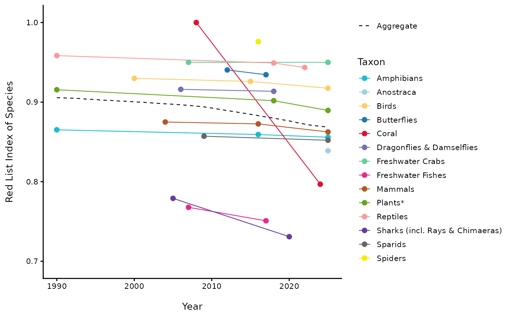
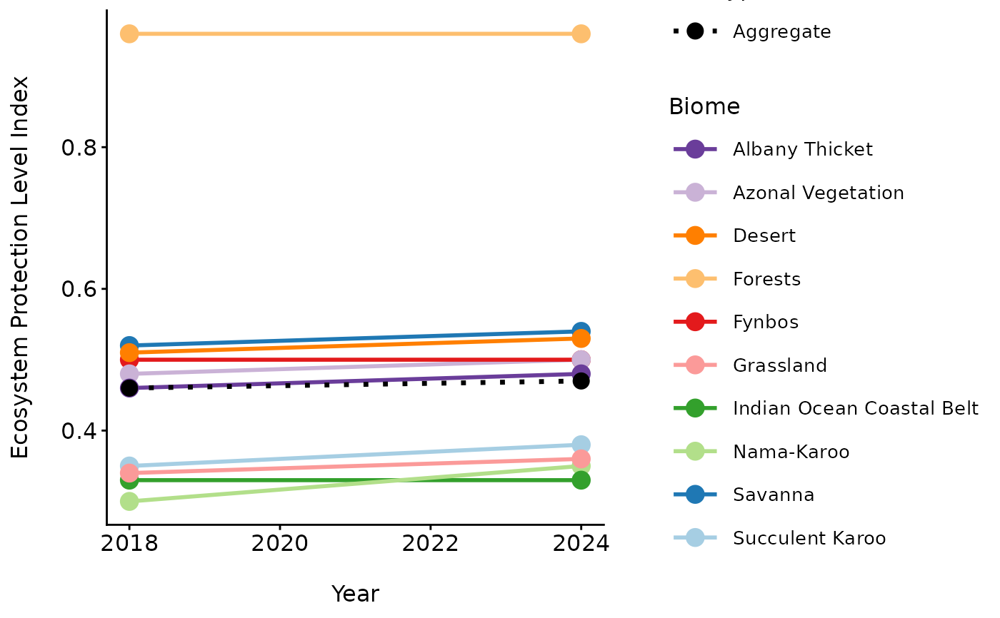

Generates the Red List Index (RLI) plots for species and ecosystems, or the Ecosystem Protection Level Index (EPLI). Supports multiple index types: RLIs (species), RLIe (ecosystems), and EPLI (protection level).
Usage
nba_index_plot(
TYPE = c("RLIs", "RLIe", "EPLI"),
DF = NULL,
YEAR = NULL,
RLI = NULL,
MIN = NULL,
MAX = NULL,
ASSESSMENT_YEAR = NULL,
GROUP = NULL,
RLIE = NULL,
BIOME = NULL,
EPLI_list = NULL,
PALETTE = "taxon",
AGGREGATE = TRUE,
SAVE = NULL
)Arguments
- TYPE
Type of index to plot. Options:
"RLIs","RLIe", or"EPLI".- DF
Input dataset containing index data (depending on TYPE).
- YEAR
Column name for year variable.
- RLI
Column name for RLI (for TYPE = "RLIs").
- MIN
Column name for lower bound (for TYPE = "RLIs").
- MAX
Column name for upper bound (for TYPE = "RLIs").
- ASSESSMENT_YEAR
Year to highlight assessment points (optional).
- GROUP
Column name for taxon or biome grouping (for TYPE = "RLIs").
- RLIE
Column name for ecosystem RLI (for TYPE = "RLIe").
- BIOME
Column name for biome (for TYPE = "RLIe" or "EPLI").
- EPLI_list
List of EPLI datasets keyed by year (for TYPE = "EPLI").
- PALETTE
Choose color palette
"taxon"or"biome".- AGGREGATE
Whether to include an aggregate line. Default = TRUE.
- SAVE
Optional filename to save the plot PNG in
outputs/.
Examples
# Example 1: RLIs grouped by Taxon
nba_index_plot(
TYPE = "RLIs",
DF = NBA_example_rlis_data,
YEAR = Year,
RLI = RLI,
ASSESSMENT_YEAR = Assessment_Year,
GROUP = Taxon,
PALETTE = "taxon",
AGGREGATE = TRUE,
SAVE = NULL
)
#> Warning: There were 62 warnings in `summarise()`.
#> The first warning was:
#> ℹ In argument: `MIN = mean(NULL, na.rm = TRUE)`.
#> ℹ In group 1: `Taxon = "Amphibians"` `Year = 1990`.
#> Caused by warning in `mean.default()`:
#> ! argument is not numeric or logical: returning NA
#> ℹ Run `dplyr::last_dplyr_warnings()` to see the 61 remaining warnings.

# Example 2: RLIe
nba_index_plot(
TYPE = "RLIe",
DF = NBA_example_rlie_data,
YEAR = "Year",
RLIE = "RLIE",
BIOME = "Biome",
PALETTE = "biome",
SAVE = NULL
)
#> Warning: Using `size` aesthetic for lines was deprecated in ggplot2 3.4.0.
#> ℹ Please use `linewidth` instead.
#> ℹ The deprecated feature was likely used in the nbaR package.
#> Please report the issue at <https://github.com/TashBes/NBA.package/issues>.
#> Warning: Ignoring unknown aesthetics: shape
# Example 3: EPLI
nba_index_plot(
TYPE = "EPLI",
EPLI_list = list(
"2018" = NBA_example_epli2018_data,
"2024" = NBA_example_epli2024_data
),
PALETTE = "biome",
SAVE = NULL
)
